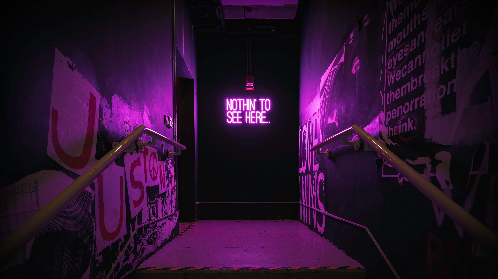

Mi vida en la mision

Yenfhael, un joven de 24 años, estudiante de la BYU Idaho y ex misionero, regresa a casa para las vacaciones de verano. La emoción de volver a ver a su familia y amigos se mezcla con la nostalgia de su misión en Venezuela. Mientras disfruta de su tiempo libre, Yenfhael se ve envuelto en un proyecto de servicio comunitario relacionado con el voleibol, su gran pasión. Al entrenar a un grupo de jóvenes de un barrio menos favorecido, descubre que puede combinar su amor por el deporte con su deseo de servir a los demás.
A medida que avanza el verano, Yenfhael enfrenta nuevos desafíos y oportunidades. Debe equilibrar sus estudios, su vida social y su compromiso con el proyecto de voleibol. Además, se encuentra con un antiguo compañero de misión que está pasando por un momento difícil. Yenfhael se da cuenta de que las lecciones que aprendió durante su misión siguen siendo relevantes en su vida diaria.

Yenfhael, con su corazón lleno de entusiasmo, regresó a Maracaibo, Venezuela. La calidez del sol tropical y el aroma de los arepas lo transportaron de inmediato a sus raíces. Vivir nuevamente con sus padres y su hermana era reconfortante, pero también significaba adaptarse a una nueva rutina. Entre los estudios de inglés y los entrenamientos de voleibol, Yenfhael se sentía realizado.
Un día, mientras revisaba sus redes sociales, se topó con una publicación sobre un campamento de verano para niños de bajos recursos en una zona rural cercana a Maracaibo. Recordando las enseñanzas de sus misioneros en la ciudad del Lago, decidió que quería hacer algo para ayudar. Con la aprobación de sus padres y la ayuda de algunos de sus amigos de la universidad, organizó un evento para recaudar fondos.